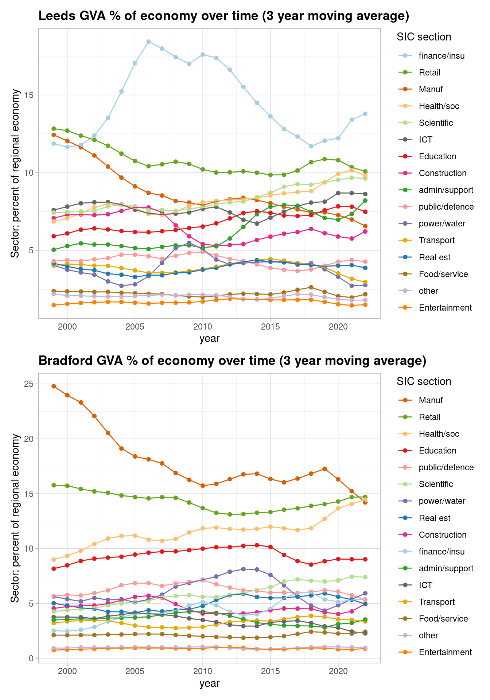
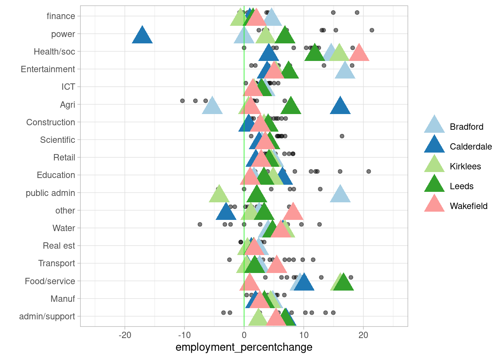
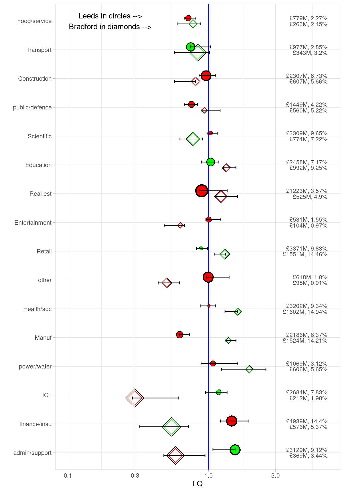
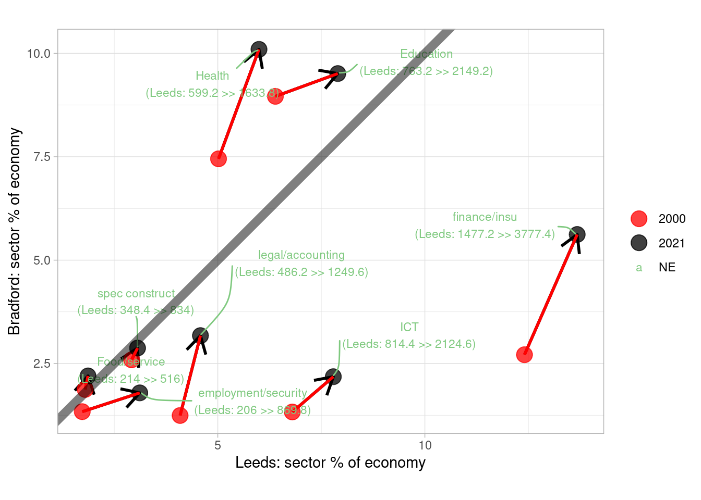
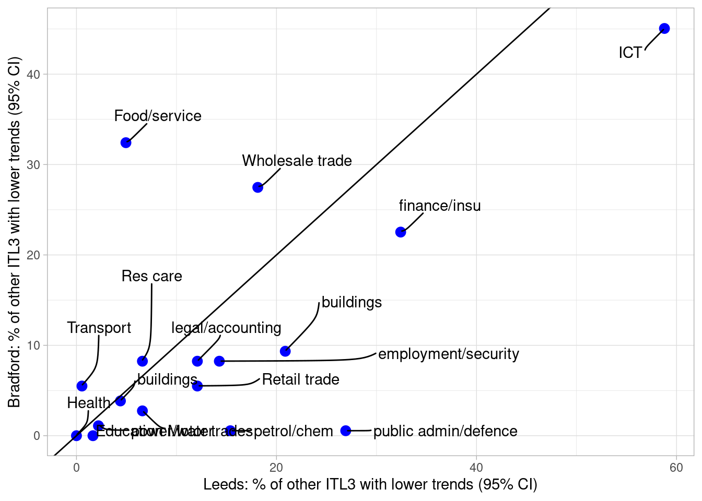

Economic collaboration across Bradford and Leeds: what does the latest sector data show?
OVERVIEW
This report digs into the economic connection between Bradford and Leeds from 1998 to the present day, putting it in a national context. It uses the latest ONS and Companies House data. The next section explores that data in detail.
An interactive online version of this document is viewable at bit.ly/lbcx2025. Open data and code for this report can be found here.
- Over the last twenty five years, the economies of Bradford and Leeds have converged more deeply. Finance is a prime example, where both cities have grown together. In this year’s Companies House data, finance job growth continues in a good mix of micro and larger firms, with “sophisticated supply chains” identified by Metro Dynamics (2017) still developing, and Bradford’s job growth ahead of UK core cities.
- Cultural and creative industries have sustained through tough times and are now thriving, helping to act as a “catalyst for inclusive growth”1, building on initiatives like Bradford’s UNESCO City of Film status and Leeds’ 2023 Year of Culture. In Leeds, the sector is more productive in purely economic terms than the UK average. Companies House data shows strong growth continues in these sectors in the most recent year, especially in smaller firms, with Bradford near the top of employment growth, on a par with Manchester.
- Information and communication technology (ICT) has been growing everywhere in the UK for the past two decades, but Leeds’ and Bradford’s ICT output has grown significantly more than 59% and 45% of other places, respectively, suggesting ICT is growing together across both and deeply connected.
- Leeds’ business services continue to grow in strength and specialisation, but Bradford’s finance, legal and technical sector growth suggests both places are benefiting from agglomeration. Sectors connected to the region’s learning and innovation have also drawn closer together economically, in both education and scientific/technical output.
- Both cities’ health sectors have grown in tandem (to become 10% and 15% of Leeds’ and Bradford’s economies), and that growth continues in the last year in the private sector, with Bradford’s companies house jobs count now not far behind Leeds.
- Commuter flows between the two cities affirms Bradford’s “strong functional relationship with Leeds” with “high flows of young qualified Bradford residents working in Leeds, many in the large global and UK consulting, accounting, insurance and financial services sector companies with presence there” (Metro Dynamics 20172).
- This picture challenges any simple core/periphery take. Productivity analysis does show Leeds has higher per worker output in several sectors, but both are very close across many of them, and have historically moved in lockstep – with Bradford’s productivity higher in some key sectors like scientific /technical, and ICT productivity some way ahead of the UK average.
- This level of economic integration has developed despite transport connectivity, not because of it. It has shaped which parts of the two cities have been able to connect the most and thus benefit from linkages. Several recent analyses (see e.g. Stansbury et al 20233) have reinforced the case that UK transport constrains core cities and their linked job markets. Addressing this impacts the whole economy, including cultural and creative sectors: “Poor transport connectivity can act as a barrier to people participating in culture”4 both from within Leeds and Bradford’s communities, and from outside the area.
- The Northern Powerhouse Rail assessment’s analysis suggested that better “connection between Leeds, Bradford and Manchester can alone potentially increase productivity by 6%, raise the employment rate by 1.5% and increase gross value added (GVA) in the north by about 8% over 10 years” (Mott McDonald p.45). This report points to the deep connections between Bradford and Leeds’ innovation and research systems, as well as their complementary service infrastructure, and the co-benefits that can underpin. A step change in transport connectivity could lead to a qualitatively different level of agglomeration built on that, taking both cities beyond the kind of numbers NPR cite. Recent jobs growth evident in the Companies House data indicates what direction the region could go in, especially if building on wider ‘corridors of opportunity’ across West Yorkshire’s economy (see Companies House analysis below of growth across the region’s five local authorities).
HEADLINES FROM THE DATA ANALYSIS
The latest ONS regional GVA data as of April 2025 covers 1998 to 2023. Companies House data (processed with this Companies House Open repo) looks at employment change for firms headquartered in Leeds and Bradford, with accounts submitted between March 2024 to 2025.
Here’s a summary of what the data analysis below shows.
- Figure 1 shows how Leeds’ and Bradford’s economic proportions have changed over time.
- Aside from the prominence of finance in Leeds, the structural shift away from manufacturing is clear in both places.
- Retail sectors have remained prominent in both across the whole period; Leeds as a retail destination hasn’t seen the two cities diverge, in terms of retail sector size.
- Health/social, often public service based in the ONS data, has grown in both over time (to become 10% and 15% of Leeds and Bradford’s economies), but as Companies House data below shows, there is evidence of recent private-sector health firm growth, especially in Bradford.
- The next plots dig deeper into the sector picture…
- Figure 2 shows how productivity has changed for both Bradford and Leeds, plotting GVA per full time job for all ITL3 zones, with Leeds and Bradford over them.
- Productivity for both has largely moved in lockstep.
- ICT productivity growth stands out - later plots support that it’s grown significantly more than other places for both.
- Scientific/tech sector productivity has been higher in Bradford, according to this data, and both L+B are higher than the UK average here.
- Figure 3 takes firm level data from Companies house and, for those 10+ employee firms that record employees in this and last year (about 50% of all accounts), examines sector employee percent change. It compares to UK ‘core cities’.
- In the last year, Bradford’s finance firms’ growth stands out strongly.
- ICT growth again is clear, though for Leeds more than Bradford in Companies House firms, as is entertainment.
- Private health/social firms’ growth is present but on the lower end compared to core cities.
- Figure 4 is the same type of plot, but looking this time at micro-firms with fewer than 10 employees in the Companies House data.
- For these much more numerous firms, health growth has been stronger than other places, while food service sector firms are at the higher end.
- Micro firms in finance appear to have been growing faster in Bradford than Leeds, and more than other places.
- Figure 5 examines location quotients for Bradford and Leeds (less than one if a sector is less concentrated than the national average, where e.g. 0.5 is half as concentrated ; more than one if more, where e.g. x2 is twice as concentrated). This measure can change if national proportions shift - so where the plot shows a manufacturing drop in concentration for Leeds and growth in Bradford, this is relative to an overall national drop. (See the plot section for a full key.) Points show LQs for the latest time points; colours show the trend over time for the whole range (1998 to 2023). Bars show the min and max LQ values for the whole time period. Points close together have similar concentrations in both; same colours have been growing/shrinking in the same direction.
- Converging and diverging sectors give indications of which could be growing together, and which could be complementary.
- Scientific and education appear both to be converging in both places, and finance looks to be moving towards the same level.
- Transport services are both growing.
- Other sectors diverge and are quite different - as well as manufacturing, business support services are clearly growing in Leeds while trending towards a smaller part of Bradford’s economy (is Leeds specialising and providing those services to Bradford and other places?)
- Figure 6 looks just at sector proportions (2 digit SIC) putting Leeds and Bradford on opposite axes, for sectors that grew as a proportion of both - to see where their economies have been (structurally) going in the same direction over the full range of the ONS data, and looking just at sectors that have always been more than 1% of each economy. (This removes an issue LQs have - LQs can change due to structural shifts in the UK, not locally.) Lines to the right of the diagonal line are more concentrated in Leeds than Bradford.
- This plot most clearly shows how finance has been developing in the same direction for both over time, as has ICT.
- It can again be seen that education is moving towards a more equal mix in both, while health - increasing for both - has become more concentrated in Bradford.
- Support and legal sectors have grown in importance in both (though the LQ plot shows Bradford has less than the UK average).
- Figure 7 pulls out sectors whose trends have been significantly more positive than other places in the UK (for logged inflation-adjusted GVA values). Again putting Bradford and Leeds on opposite axes, it shows the percentage of other UK ITL3 zones in the UK that had a lower trend over the last ten years (and whose 95% confidence intervals don’t overlap). So while growth could be positive (or negative) everywhere, this shows whether Leeds/Bradford’s rate over time is higher in comparison to those.
- ICT volume output has been growing everywhere in the UK over time, but Leeds and Bradford have grown significantly more (on this measure) than 59% and 45% of other places, respectively.
- The trend for finance and insurance has been significantly higher than 32% / 22% of other places, respectively for Leeds and Bradford.
- Leeds and Bradford have separately had higher significant slopes in different sectors e.g. Bradford food/service slopes higher than 32% of other places, but Leeds much lower at 5%.
1. How has the structure of Leeds and Bradford’s economies changed over time?
2. GVA per job for Leeds and Bradford’s sectors compared to the rest of the UK

4: Same as above from Companies House data, but all firms with fewer than 10 employees

5: Location quotient change for Leeds and Bradford’s broad sectors
Key for location quotient plot (see this post for more):
- Location quotients for sectoral GVA in the selected region - green/red spots are LQ for the latest time point.
- Sectors to the right of the blue line are more concentrated in this region when compared to the national average. (e.g. LQ = 10, it is 10x more concentrated)
- Green circles have been increasing in concentration over time (larger circles increasing the most)
- Red circles have been decreasing in concentration over time (larger circles decreasing the most)
- Black horizontal lines show the min and max of concentration in the data’s history (from 2015 to 2023) (so, often, large green circles will be at the right of this line because sector concentration has been steadily increasing)
- Per sector GVA money amounts and percent of that region’s entire economy are shown on the right.

6. Which sectors grew as a proportion of both Leeds and Bradford, and by how much? Change between 1998 and 2023 (5 yr moving av) in Leeds and Bradford sectors (2 digit SIC)

7. In the last decade (2014 to 2023) which sectors in Leeds and Bradford have increased their output significantly more than other places?
Figure 7 aims to show which sectors (at 2 digit SIC level) have relatively increased more than other places - and that the change is significant (slopes don’t overlap, with 95% CIs). It uses the most recently available GVA data, up to 2023, looking at trends over the last decade.
To get to the points in the plot, the data goes through the following steps:
- Find all trends for each sector and compare Leeds and Bradford to every other ITL3 zone in the UK (for log values of inflation-adjusted GVA).
- Record a ‘yes’ for those pair comparisons where Leeds or Bradford’s slope is significantly higher, and count them.
- Plot what percent of places Leeds/Bradford has these higher slopes.
Note, growth could be positive (or negative) everywhere; the comparison shows whether Leeds/Bradford’s rate over time is higher in comparison to those. So, for example - ICT volume output has been growing everywhere in the UK over time, but Leeds and Bradford have grown significantly more (on this measure) than 59% and 45% of other places, respectively.

Footnotes
“Culture and creative industries: A catalyst for inclusive growth”, Inclusive Growth Network. Jan 2024.↩︎
“Bradford Economic Intelligence” report, Metro dynamics. July 2017↩︎
Stansbury, A., Turner ,Dan, and Balls, E., 2023. Tackling the UK’s regional economic inequality: binding constraints and avenues for policy intervention. Contemporary Social Science 18, 318–356.↩︎
“Culture and creative industries: A catalyst for inclusive growth”, Inclusive Growth Network. Jan 2024.↩︎
“How to kickstart a northern renaissance: A vision-led case for investing n Northern Powerhouse Rail” report, Mott McDonald. 2021.↩︎